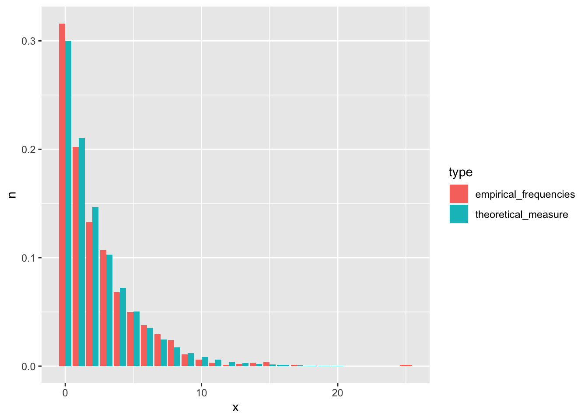
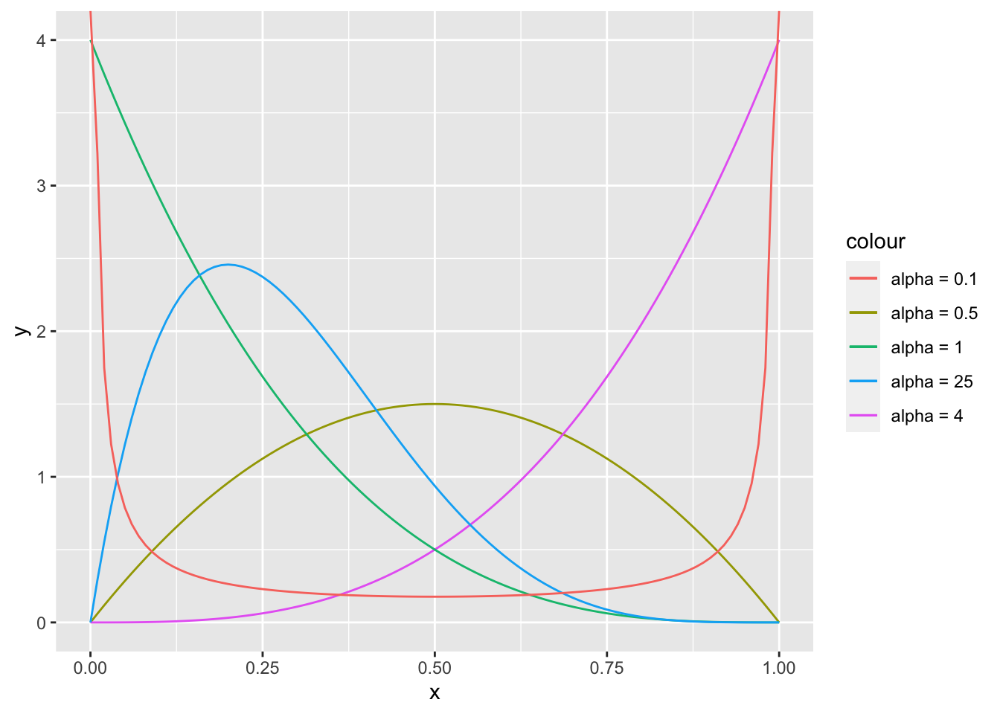

Chapter 4 Random variables
This chapter deals with random variables and their distributions.
The students are expected to acquire the following knowledge:
Theoretical
- Identification of random variables.
- Convolutions of random variables.
- Derivation of PDF, PMF, CDF, and quantile function.
- Definitions and properties of common discrete random variables.
- Definitions and properties of common continuous random variables.
- Transforming univariate random variables.
R
- Familiarize with PDF, PMF, CDF, and quantile functions for several distributions.
- Visual inspection of probability distributions.
- Analytical and empirical calculation of probabilities based on distributions.
- New R functions for plotting (for example, facet_wrap).
- Creating random number generators based on the Uniform distribution.
4.1 General properties and calculations
Exercise 4.1 Which of the functions below are valid CDFs? Find their respective densities. R: Plot the three functions.
\[\begin{equation} F(x) = \begin{cases} 1 - e^{-x^2} & x \geq 0 \\ 0 & x < 0. \end{cases} \end{equation}\]
\[\begin{equation} F(x) = \begin{cases} e^{-\frac{1}{x}} & x > 0 \\ 0 & x \leq 0. \end{cases} \end{equation}\]
\[\begin{equation} F(x) = \begin{cases} 0 & x \leq 0 \\ \frac{1}{3} & 0 < x \leq \frac{1}{2} \\ 1 & x > \frac{1}{2}. \end{cases} \end{equation}\]
Solution.
- Yes.
- First, let us check the limits. \(\lim_{x \rightarrow -\infty} (0) = 0\). \(\lim_{x \rightarrow \infty} (1 - e^{-x^2}) = 1 - \lim_{x \rightarrow \infty} e^{-x^2} = 1 - 0 = 1\).
- Second, let us check whether the function is increasing. Let \(x > y \geq 0\). Then \(1 - e^{-x^2} \geq 1 - e^{-y^2}\).
- We only have to check right continuity for the point zero. \(F(0) = 0\) and \(\lim_{\epsilon \downarrow 0}F (0 + \epsilon) = \lim_{\epsilon \downarrow 0} 1 - e^{-\epsilon^2} = 1 - \lim_{\epsilon \downarrow 0} e^{-\epsilon^2} = 1 - 1 = 0\).
- We get the density by differentiating the CDF. \(p(x) = \frac{d}{dx} 1 - e^{-x^2} = 2xe^{-x^2}.\) Students are encouraged to check that this is a proper PDF.
- Yes.
- First, let us check the limits. $_{x -} (0) = 0 and \(\lim_{x \rightarrow \infty} (e^{-\frac{1}{x}}) = 1\).
- Second, let us check whether the function is increasing. Let \(x > y \geq 0\). Then \(e^{-\frac{1}{x}} \geq e^{-\frac{1}{y}}\).
- We only have to check right continuity for the point zero. \(F(0) = 0\) and \(\lim_{\epsilon \downarrow 0}F (0 + \epsilon) = \lim_{\epsilon \downarrow 0} e^{-\frac{1}{\epsilon}} = 0\).
- We get the density by differentiating the CDF. \(p(x) = \frac{d}{dx} e^{-\frac{1}{x}} = \frac{1}{x^2}e^{-\frac{1}{x}}.\) Students are encouraged to check that this is a proper PDF.
- No. The function is not right continuous as \(F(\frac{1}{2}) = \frac{1}{3}\), but \(\lim_{\epsilon \downarrow 0} F(\frac{1}{2} + \epsilon) = 1\).
f1 <- function (x) {
tmp <- 1 - exp(-x^2)
tmp[x < 0] <- 0
return(tmp)
}
f2 <- function (x) {
tmp <- exp(-(1 / x))
tmp[x <= 0] <- 0
return(tmp)
}
f3 <- function (x) {
tmp <- x
tmp[x == x] <- 1
tmp[x <= 0.5] <- 1/3
tmp[x <= 0] <- 0
return(tmp)
}
cdf_data <- tibble(x = seq(-1, 20, by = 0.001),
f1 = f1(x),
f2 = f2(x),
f3 = f3(x)) %>%
melt(id.vars = "x")
cdf_plot <- ggplot(data = cdf_data, aes(x = x, y = value, color = variable)) +
geom_hline(yintercept = 1) +
geom_line()
plot(cdf_plot)
Exercise 4.2 Let \(X\) be a random variable with CDF \[\begin{equation} F(x) = \begin{cases} 0 & x < 0 \\ \frac{x^2}{2} & 0 \leq x < 1 \\ \frac{1}{2} + \frac{p}{2} & 1 \leq x < 2 \\ \frac{1}{2} + \frac{p}{2} + \frac{1 - p}{2} & x \geq 2 \end{cases} \end{equation}\]
R: Plot this CDF for \(p = 0.3\). Is it a discrete, continuous, or mixed random varible?
Find the probability density/mass of \(X\).
f1 <- function (x, p) {
tmp <- x
tmp[x >= 2] <- 0.5 + (p * 0.5) + ((1-p) * 0.5)
tmp[x < 2] <- 0.5 + (p * 0.5)
tmp[x < 1] <- (x[x < 1])^2 / 2
tmp[x < 0] <- 0
return(tmp)
}
cdf_data <- tibble(x = seq(-1, 5, by = 0.001), y = f1(x, 0.3))
cdf_plot <- ggplot(data = cdf_data, aes(x = x, y = y)) +
geom_hline(yintercept = 1) +
geom_line(color = "blue")
plot(cdf_plot)
Solution.
\(X\) is a mixed random variable.
Since \(X\) is a mixed random variable, we have to find the PDF of the continuous part and the PMF of the discrete part. We get the continuous part by differentiating the corresponding CDF, \(\frac{d}{dx}\frac{x^2}{2} = x\). So the PDF, when \(0 \leq x < 1\), is \(p(x) = x\). Let us look at the discrete part now. It has two steps, so this is a discrete distribution with two outcomes – numbers 1 and 2. The first happens with probability \(\frac{p}{2}\), and the second with probability \(\frac{1 - p}{2}\). This reminds us of the Bernoulli distribution. The PMF for the discrete part is \(P(X = x) = (\frac{p}{2})^{2 - x} (\frac{1 - p}{2})^{x - 1}\).
Exercise 4.3 (Convolutions) Convolutions are probability distributions that correspond to sums of independent random variables.
Let \(X\) and \(Y\) be independent discrete variables. Find the PMF of \(Z = X + Y\). Hint: Use the law of total probability.
Let \(X\) and \(Y\) be independent continuous variables. Find the PDF of \(Z = X + Y\). Hint: Start with the CDF.
Solution.
\[\begin{align} P(Z = z) &= P(X + Y = z) & \\ &= \sum_{k = -\infty}^\infty P(X + Y = z | Y = k) P(Y = k) & \text{ (law of total probability)} \\ &= \sum_{k = -\infty}^\infty P(X + k = z | Y = k) P(Y = k) & \\ &= \sum_{k = -\infty}^\infty P(X + k = z) P(Y = k) & \text{ (independence of $X$ and $Y$)} \\ &= \sum_{k = -\infty}^\infty P(X = z - k) P(Y = k). & \end{align}\]
Let \(f\) and \(g\) be the PDFs of \(X\) and \(Y\) respectively. \[\begin{align} F(z) &= P(Z < z) \\ &= P(X + Y < z) \\ &= \int_{-\infty}^{\infty} P(X + Y < z | Y = y)P(Y = y)dy \\ &= \int_{-\infty}^{\infty} P(X + y < z | Y = y)P(Y = y)dy \\ &= \int_{-\infty}^{\infty} P(X + y < z)P(Y = y)dy \\ &= \int_{-\infty}^{\infty} P(X < z - y)P(Y = y)dy \\ &= \int_{-\infty}^{\infty} (\int_{-\infty}^{z - y} f(x) dx) g(y) dy \end{align}\] Now \[\begin{align} p(z) &= \frac{d}{dz} F(z) & \\ &= \int_{-\infty}^{\infty} (\frac{d}{dz}\int_{-\infty}^{z - y} f(x) dx) g(y) dy & \\ &= \int_{-\infty}^{\infty} f(z - y) g(y) dy & \text{ (fundamental theorem of calculus)}. \end{align}\]
4.2 Discrete random variables
Exercise 4.4 (Binomial random variable) Let \(X_k\), \(k = 1,...,n\), be random variables with the Bernoulli measure as the PMF. Let \(X = \sum_{k=1}^n X_k\).
We call \(X_k\) a Bernoulli random variable with parameter \(p \in (0,1)\). Find the CDF of \(X_k\).
Find PMF of \(X\). This is a Binomial random variable with support in \(\{0,1,2,...,n\}\) and parameters \(p \in (0,1)\) and \(n \in \mathbb{N}_0\). We denote \[\begin{equation} X | n,p \sim \text{binomial}(n,p). \end{equation}\]
Find CDF of \(X\).
R: Simulate from the binomial distribution with \(n = 10\) and \(p = 0.5\), and from \(n\) Bernoulli distributions with \(p = 0.5\). Visually compare the sum of Bernoullis and the binomial. Hint: there is no standard function like rpois for a Bernoulli random variable. Check exercise 1.11 to find out how to sample from a Bernoulli distribution.
Solution.
There are two outcomes – zero and one. Zero happens with probability \(1 - p\). Therefore \[\begin{equation} F(k) = \begin{cases} 0 & k < 0 \\ 1 - p & 0 \leq k < 1 \\ 1 & k \geq 1. \end{cases} \end{equation}\]
For the probability of \(X\) to be equal to some \(k \leq n\), exactly \(k\) Bernoulli variables need to be one, and the others zero. So \(p^k(1-p)^{n-k}\). There are \(\binom{n}{k}\) such possible arrangements. Therefore \[\begin{align} P(X = k) = \binom{n}{k} p^k (1 - p)^{n-k}. \end{align}\]
\[\begin{equation} F(k) = \sum_{i = 0}^{\lfloor k \rfloor} \binom{n}{i} p^i (1 - p)^{n - i} \end{equation}\]
set.seed(1)
nsamps <- 10000
binom_samp <- rbinom(nsamps, size = 10, prob = 0.5)
bernoulli_mat <- matrix(data = NA, nrow = nsamps, ncol = 10)
for (i in 1:nsamps) {
bernoulli_mat[i, ] <- rbinom(10, size = 1, prob = 0.5)
}
bern_samp <- apply(bernoulli_mat, 1, sum)
b_data <- tibble(x = c(binom_samp, bern_samp),
type = c(rep("binomial", 10000), rep("Bernoulli_sum", 10000)))
b_plot <- ggplot(data = b_data, aes(x = x, fill = type)) +
geom_bar(position = "dodge")
plot(b_plot)
Exercise 4.5 (Geometric random variable) A variable with PMF \[\begin{equation} P(k) = p(1-p)^k \end{equation}\] is a geometric random variable with support in non-negative integers. It has one parameter \(p \in (0,1]\). We denote \[\begin{equation} X | p \sim \text{geometric}(p) \end{equation}\]
Derive the CDF of a geometric random variable.
R: Draw 1000 samples from the geometric distribution with \(p = 0.3\) and compare their frequencies to theoretical values.
Solution.
- \[\begin{align} P(X \leq k) &= \sum_{i = 0}^k p(1-p)^i \\ &= p \sum_{i = 0}^k (1-p)^i \\ &= p \frac{1 - (1-p)^{k+1}}{1 - (1 - p)} \\ &= 1 - (1-p)^{k + 1} \end{align}\]
set.seed(1)
geo_samp <- rgeom(n = 1000, prob = 0.3)
geo_samp <- data.frame(x = geo_samp) %>%
count(x) %>%
mutate(n = n / 1000, type = "empirical_frequencies") %>%
bind_rows(data.frame(x = 0:20, n = dgeom(0:20, prob = 0.3), type = "theoretical_measure"))
geo_plot <- ggplot(data = geo_samp, aes(x = x, y = n, fill = type)) +
geom_bar(stat="identity", position = "dodge")
plot(geo_plot)
Exercise 4.6 (Poisson random variable) A variable with PMF \[\begin{equation} P(k) = \frac{\lambda^k e^{-\lambda}}{k!} \end{equation}\] is a Poisson random variable with support in non-negative integers. It has one positive parameter \(\lambda\), which also represents its mean value and variance (a measure of the deviation of the values from the mean – more on mean and variance in the next chapter). We denote \[\begin{equation} X | \lambda \sim \text{Poisson}(\lambda). \end{equation}\] This distribution is usually the default choice for modeling counts. We have already encountered a Poisson random variable in exercise 1.12, where we also sampled from this distribution.
The CDF of a Poisson random variable is \(P(X <= x) = e^{-\lambda} \sum_{i=0}^x \frac{\lambda^{i}}{i!}\).
- R: Draw 1000 samples from the Poisson distribution with \(\lambda = 5\) and compare their empirical cumulative distribution function with the theoretical CDF.
set.seed(1)
pois_samp <- rpois(n = 1000, lambda = 5)
pois_samp <- data.frame(x = pois_samp)
pois_plot <- ggplot(data = pois_samp, aes(x = x, colour = "ECDF")) +
stat_ecdf(geom = "step") +
geom_step(data = tibble(x = 0:17, y = ppois(x, 5)), aes(x = x, y = y, colour = "CDF")) +
scale_colour_manual("Lgend title", values = c("black", "red"))
plot(pois_plot)
Exercise 4.7 (Negative binomial random variable) A variable with PMF \[\begin{equation} p(k) = \binom{k + r - 1}{k}(1-p)^r p^k \end{equation}\] is a negative binomial random variable with support in non-negative integers. It has two parameters \(r > 0\) and \(p \in (0,1)\). We denote \[\begin{equation} X | r,p \sim \text{NB}(r,p). \end{equation}\]
Let us reparameterize the negative binomial distribution with \(q = 1 - p\). Find the PMF of \(X \sim \text{NB}(1, q)\). Do you recognize this distribution?
Show that the sum of two negative binomial random variables with the same \(p\) is also a negative binomial random variable. Hint: Use the fact that the number of ways to place \(n\) indistinct balls into \(k\) boxes is \(\binom{n + k - 1}{n}\).
R: Draw samples from \(X \sim \text{NB}(5, 0.4)\) and \(Y \sim \text{NB}(3, 0.4)\). Draw samples from \(Z = X + Y\), where you use the parameters calculated in b). Plot both distributions, their sum, and \(Z\) using facet_wrap. Be careful, as R uses a different parameterization size=\(r\) and prob=\(1 - p\).
Solution.
\[\begin{align} P(X = k) &= \binom{k + 1 - 1}{k}q^1 (1-q)^k \\ &= q(1-q)^k. \end{align}\] This is the geometric distribution.
Let \(X \sim \text{NB}(r_1, p)\) and \(Y \sim \text{NB}(r_2, p)\). Let \(Z = X + Y\). \[\begin{align} P(Z = z) &= \sum_{k = 0}^{\infty} P(X = z - k)P(Y = k), \text{ if k < 0, then the probabilities are 0} \\ &= \sum_{k = 0}^{z} P(X = z - k)P(Y = k), \text{ if k > z, then the probabilities are 0} \\ &= \sum_{k = 0}^{z} \binom{z - k + r_1 - 1}{z - k}(1 - p)^{r_1} p^{z - k} \binom{k + r_2 - 1}{k}(1 - p)^{r_2} p^{k} & \\ &= \sum_{k = 0}^{z} \binom{z - k + r_1 - 1}{z - k} \binom{k + r_2 - 1}{k}(1 - p)^{r_1 + r_2} p^{z} & \\ &= (1 - p)^{r_1 + r_2} p^{z} \sum_{k = 0}^{z} \binom{z - k + r_1 - 1}{z - k} \binom{k + r_2 - 1}{k}& \end{align}\] The part before the sum reminds us of the negative binomial distribution with parameters \(r_1 + r_2\) and \(p\). To complete this term to the negative binomial PMF we need \(\binom{z + r_1 + r_2 -1}{z}\). So the only thing we need to prove is that the sum equals this term. Both terms in the sum can be interpreted as numbers of ways to place a number of balls into boxes. For the left term it is \(z-k\) balls into \(r_1\) boxes, and for the right \(k\) balls into \(r_2\) boxes. For each \(k\) we are distributing \(z\) balls in total. By summing over all \(k\), we actually get all the possible placements of \(z\) balls into \(r_1 + r_2\) boxes. Therefore \[\begin{align} P(Z = z) &= (1 - p)^{r_1 + r_2} p^{z} \sum_{k = 0}^{z} \binom{z - k + r_1 - 1}{z - k} \binom{k + r_2 - 1}{k}& \\ &= \binom{z + r_1 + r_2 -1}{z} (1 - p)^{r_1 + r_2} p^{z}. \end{align}\] From this it also follows that the sum of geometric distributions with the same parameter is a negative binomial distribution.
\(Z \sim \text{NB}(8, 0.4)\).
set.seed(1)
nsamps <- 10000
x <- rnbinom(nsamps, size = 5, prob = 0.6)
y <- rnbinom(nsamps, size = 3, prob = 0.6)
xpy <- x + y
z <- rnbinom(nsamps, size = 8, prob = 0.6)
samps <- tibble(x, y, xpy, z)
samps <- melt(samps)
ggplot(data = samps, aes(x = value)) +
geom_bar() +
facet_wrap(~ variable)
4.3 Continuous random variables
Exercise 4.8 (Exponential random variable) A variable \(X\) with PDF \(\lambda e^{-\lambda x}\) is an exponential random variable with support in non-negative real numbers. It has one positive parameter \(\lambda\). We denote \[\begin{equation} X | \lambda \sim \text{Exp}(\lambda). \end{equation}\]
Find the CDF of an exponential random variable.
Find the quantile function of an exponential random variable.
Calculate the probability \(P(1 \leq X \leq 3)\), where \(X \sim \text{Exp(1.5)}\).
R: Check your answer to c) with a simulation (rexp). Plot the probability in a meaningful way.
R: Implement PDF, CDF, and the quantile function and compare their values with corresponding R functions visually. Hint: use the size parameter to make one of the curves wider.
Solution.
\[\begin{align} F(x) &= \int_{0}^{x} \lambda e^{-\lambda t} dt \\ &= \lambda \int_{0}^{x} e^{-\lambda t} dt \\ &= \lambda (\frac{1}{-\lambda}e^{-\lambda t} |_{0}^{x}) \\ &= \lambda(\frac{1}{\lambda} - \frac{1}{\lambda} e^{-\lambda x}) \\ &= 1 - e^{-\lambda x}. \end{align}\]
\[\begin{align} F(F^{-1}(x)) &= x \\ 1 - e^{-\lambda F^{-1}(x)} &= x \\ e^{-\lambda F^{-1}(x)} &= 1 - x \\ -\lambda F^{-1}(x) &= \ln(1 - x) \\ F^{-1}(x) &= - \frac{ln(1 - x)}{\lambda}. \end{align}\]
\[\begin{align} P(1 \leq X \leq 3) &= P(X \leq 3) - P(X \leq 1) \\ &= P(X \leq 3) - P(X \leq 1) \\ &= 1 - e^{-1.5 \times 3} - 1 + e^{-1.5 \times 1} \\ &\approx 0.212. \end{align}\]
set.seed(1)
nsamps <- 1000
samps <- rexp(nsamps, rate = 1.5)
sum(samps >= 1 & samps <= 3) / nsamps## [1] 0.212exp_plot <- ggplot(data.frame(x = seq(0, 5, by = 0.01)), aes(x = x)) +
stat_function(fun = dexp, args = list(rate = 1.5)) +
stat_function(fun = dexp, args = list(rate = 1.5), xlim = c(1,3), geom = "area", fill = "red")
plot(exp_plot)
exp_pdf <- function(x, lambda) {
return (lambda * exp(-lambda * x))
}
exp_cdf <- function(x, lambda) {
return (1 - exp(-lambda * x))
}
exp_quant <- function(q, lambda) {
return (-(log(1 - q) / lambda))
}
ggplot(data = data.frame(x = seq(0, 5, by = 0.01)), aes(x = x)) +
stat_function(fun = dexp, args = list(rate = 1.5), aes(color = "R"), size = 2.5) +
stat_function(fun = exp_pdf, args = list(lambda = 1.5), aes(color = "Mine"), size = 1.2) +
scale_color_manual(values = c("red", "black"))
ggplot(data = data.frame(x = seq(0, 5, by = 0.01)), aes(x = x)) +
stat_function(fun = pexp, args = list(rate = 1.5), aes(color = "R"), size = 2.5) +
stat_function(fun = exp_cdf, args = list(lambda = 1.5), aes(color = "Mine"), size = 1.2) +
scale_color_manual(values = c("red", "black"))
ggplot(data = data.frame(x = seq(0, 1, by = 0.01)), aes(x = x)) +
stat_function(fun = qexp, args = list(rate = 1.5), aes(color = "R"), size = 2.5) +
stat_function(fun = exp_quant, args = list(lambda = 1.5), aes(color = "Mine"), size = 1.2) +
scale_color_manual(values = c("red", "black"))
Exercise 4.9 (Uniform random variable) Continuous uniform random variable with parameters \(a\) and \(b\) has the PDF \[\begin{equation} p(x) = \begin{cases} \frac{1}{b - a} & x \in [a,b] \\ 0 & \text{otherwise}. \end{cases} \end{equation}\]
Find the CDF of the uniform random variable.
Find the quantile function of the uniform random variable.
Let \(X \sim \text{Uniform}(a,b)\). Find the CDF of the variable \(Y = \frac{X - a}{b - a}\). This is the standard uniform random variable.
Let \(X \sim \text{Uniform}(-1, 3)\). Find such \(z\) that \(P(X < z + \mu_x) = \frac{1}{5}\).
R: Check your result from d) using simulation.
Solution. a. \[\begin{align} F(x) &= \int_{a}^x \frac{1}{b - a} dt \\ &= \frac{1}{b - a} \int_{a}^x dt \\ &= \frac{x - a}{b - a}. \end{align}\]
\[\begin{align} F(F^{-1}(p)) &= p \\ \frac{F^{-1}(p) - a}{b - a} &= p \\ F^{-1}(p) &= p(b - a) + a. \end{align}\]
\[\begin{align} F_Y(y) &= P(Y < y) \\ &= P(\frac{X - a}{b - a} < y) \\ &= P(X < y(b - a) + a) \\ &= F_X(y(b - a) + a) \\ &= \frac{(y(b - a) + a) - a}{b - a} \\ &= y. \end{align}\]
\[\begin{align} P(X < z + 1) &= \frac{1}{5} \\ F(z + 1) &= \frac{1}{5} \\ z + 1 &= F^{-1}(\frac{1}{5}) \\ z &= \frac{1}{5}4 - 1 - 1 \\ z &= -1.2. \end{align}\]
set.seed(1)
a <- -1
b <- 3
nsamps <- 10000
unif_samp <- runif(nsamps, a, b)
mu_x <- mean(unif_samp)
new_samp <- unif_samp - mu_x
quantile(new_samp, probs = 1/5)## 20%
## -1.203192punif(-0.2, -1, 3)## [1] 0.2Exercise 4.10 (Beta random variable) A variable \(X\) with PDF \[\begin{equation} p(x) = \frac{x^{\alpha - 1} (1 - x)^{\beta - 1}}{\text{B}(\alpha, \beta)}, \end{equation}\] where \(\text{B}(\alpha, \beta) = \frac{\Gamma(\alpha) \Gamma(\beta)}{\Gamma(\alpha + \beta)}\) and \(\Gamma(x) = \int_0^{\infty} x^{z - 1} e^{-x} dx\) is a Beta random variable with support on \([0,1]\). It has two positive parameters \(\alpha\) and \(\beta\). Notation: \[\begin{equation} X | \alpha, \beta \sim \text{Beta}(\alpha, \beta) \end{equation}\] It is often used in modeling rates.
Calculate the PDF for \(\alpha = 1\) and \(\beta = 1\). What do you notice?
R: Plot densities of the beta distribution for parameter pairs (2, 2), (4, 1), (1, 4), (2, 5), and (0.1, 0.1).
R: Sample from \(X \sim \text{Beta}(2, 5)\) and compare the histogram with Beta PDF.
Solution.
- \[\begin{equation} p(x) = \frac{x^{1 - 1} (1 - x)^{1 - 1}}{\text{B}(1, 1)} = 1. \end{equation}\] This is the standard uniform distribution.
set.seed(1)
ggplot(data = data.frame(x = seq(0, 1, by = 0.01)), aes(x = x)) +
stat_function(fun = dbeta, args = list(shape1 = 2, shape2 = 2), aes(color = "alpha = 0.5")) +
stat_function(fun = dbeta, args = list(shape1 = 4, shape2 = 1), aes(color = "alpha = 4")) +
stat_function(fun = dbeta, args = list(shape1 = 1, shape2 = 4), aes(color = "alpha = 1")) +
stat_function(fun = dbeta, args = list(shape1 = 2, shape2 = 5), aes(color = "alpha = 25")) +
stat_function(fun = dbeta, args = list(shape1 = 0.1, shape2 = 0.1), aes(color = "alpha = 0.1"))
set.seed(1)
nsamps <- 1000
samps <- rbeta(nsamps, 2, 5)
ggplot(data = data.frame(x = samps), aes(x = x)) +
geom_histogram(aes(y = ..density..), color = "black") +
stat_function(data = data.frame(x = seq(0, 1, by = 0.01)), aes(x = x),
fun = dbeta,
args = list(shape1 = 2, shape2 = 5),
color = "red",
size = 1.2)
Exercise 4.11 (Gamma random variable) A random variable with PDF \[\begin{equation} p(x) = \frac{\beta^\alpha}{\Gamma(\alpha)} x^{\alpha - 1}e^{-\beta x} \end{equation}\] is a Gamma random variable with support on the positive numbers and parameters shape \(\alpha > 0\) and rate \(\beta > 0\). We write \[\begin{equation} X | \alpha, \beta \sim \text{Gamma}(\alpha, \beta) \end{equation}\] and it’s CDF is \[\begin{equation} \frac{\gamma(\alpha, \beta x)}{\Gamma(\alpha)}, \end{equation}\] where \(\gamma(s, x) = \int_0^x t^{s-1} e^{-t} dt\). It is usually used in modeling positive phenomena (for example insurance claims and rainfalls).
Let \(X \sim \text{Gamma}(1, \beta)\). Find the PDF of \(X\). Do you recognize this PDF?
Let \(k = \alpha\) and \(\theta = \frac{1}{\beta}\). Find the PDF of \(X | k, \theta \sim \text{Gamma}(k, \theta)\). Random variables can be reparameterized, and sometimes a reparameterized distribution is more suitable for certain calculations. The first parameterization is for example usually used in Bayesian statistics, while this parameterization is more common in econometrics and some other applied fields. Note that you also need to pay attention to the parameters in statistical software, so diligently read the help files when using functions like rgamma to see how the function is parameterized.
R: Plot gamma CDF for random variables with shape and rate parameters (1,1), (10,1), (1,10).
Solution.
\[\begin{align} p(x) &= \frac{\beta^1}{\Gamma(1)} x^{1 - 1}e^{-\beta x} \\ &= \beta e^{-\beta x} \end{align}\] This is the PDF of the exponential distribution with parameter \(\beta\).
\[\begin{align} p(x) &= \frac{1}{\Gamma(k)\beta^k} x^{k - 1}e^{-\frac{x}{\theta}}. \end{align}\]
set.seed(1)
ggplot(data = data.frame(x = seq(0, 25, by = 0.01)), aes(x = x)) +
stat_function(fun = pgamma, args = list(shape = 1, rate = 1), aes(color = "Gamma(1,1)")) +
stat_function(fun = pgamma, args = list(shape = 10, rate = 1), aes(color = "Gamma(10,1)")) +
stat_function(fun = pgamma, args = list(shape = 1, rate = 10), aes(color = "Gamma(1,10)"))
Exercise 4.12 (Normal random variable) A random variable with PDF \[\begin{equation} p(x) = \frac{1}{\sqrt{2 \pi \sigma^2}} e^{-\frac{(x - \mu)^2}{2 \sigma^2}} \end{equation}\] is a normal random variable with support on the real axis and parameters \(\mu\) in reals and \(\sigma^2 > 0\). The first is the mean parameter and the second is the variance parameter. Many statistical methods assume a normal distribution. We denote \[\begin{equation} X | \mu, \sigma \sim \text{N}(\mu, \sigma^2), \end{equation}\] and it’s CDF is \[\begin{equation} F(x) = \int_{-\infty}^x \frac{1}{\sqrt{2 \pi \sigma^2}} e^{-\frac{(t - \mu)^2}{2 \sigma^2}} dt, \end{equation}\] which is intractable and is usually approximated. Due to its flexibility it is also one of the most researched distributions. For that reason statisticians often use transformations of variables or approximate distributions with the normal distribution.
Show that a variable \(\frac{X - \mu}{\sigma} \sim \text{N}(0,1)\). This transformation is called standardization, and \(\text{N}(0,1)\) is a standard normal distribution.
R: Plot the normal distribution with \(\mu = 0\) and different values for the \(\sigma\) parameter.
R: The normal distribution provides a good approximation for the Poisson distribution with a large \(\lambda\). Let \(X \sim \text{Poisson}(50)\). Approximate \(X\) with the normal distribution and compare its density with the Poisson histogram. What are the values of \(\mu\) and \(\sigma^2\) that should provide the best approximation? Note that R function rnorm takes standard deviation (\(\sigma\)) as a parameter and not variance.
Solution.
- \[\begin{align} P(\frac{X - \mu}{\sigma} < x) &= P(X < \sigma x + \mu) \\ &= F(\sigma x + \mu) \\ &= \int_{-\infty}^{\sigma x + \mu} \frac{1}{\sqrt{2 \pi \sigma^2}} e^{-\frac{(t - \mu)^2}{2\sigma^2}} dt \end{align}\] Now let \(s = f(t) = \frac{t - \mu}{\sigma}\), then \(ds = \frac{dt}{\sigma}\) and \(f(\sigma x + \mu) = x\), so \[\begin{align} P(\frac{X - \mu}{\sigma} < x) &= \int_{-\infty}^{x} \frac{1}{\sqrt{2 \pi}} e^{-\frac{s^2}{2}} ds. \end{align}\] There is no need to evaluate this integral, as we recognize it as the CDF of a normal distribution with \(\mu = 0\) and \(\sigma^2 = 1\).
set.seed(1)
# b
ggplot(data = data.frame(x = seq(-15, 15, by = 0.01)), aes(x = x)) +
stat_function(fun = dnorm, args = list(mean = 0, sd = 1), aes(color = "sd = 1")) +
stat_function(fun = dnorm, args = list(mean = 0, sd = 0.4), aes(color = "sd = 0.1")) +
stat_function(fun = dnorm, args = list(mean = 0, sd = 2), aes(color = "sd = 2")) +
stat_function(fun = dnorm, args = list(mean = 0, sd = 5), aes(color = "sd = 5"))
# c
mean_par <- 50
nsamps <- 100000
pois_samps <- rpois(nsamps, lambda = mean_par)
norm_samps <- rnorm(nsamps, mean = mean_par, sd = sqrt(mean_par))
my_plot <- ggplot() +
geom_bar(data = tibble(x = pois_samps), aes(x = x, y = (..count..)/sum(..count..))) +
geom_density(data = tibble(x = norm_samps), aes(x = x), color = "red")
plot(my_plot)
Exercise 4.13 (Logistic random variable) A logistic random variable has CDF \[\begin{equation} F(x) = \frac{1}{1 + e^{-\frac{x - \mu}{s}}}, \end{equation}\] where \(\mu\) is real and \(s > 0\). The support is on the real axis. We denote \[\begin{equation} X | \mu, s \sim \text{Logistic}(\mu, s). \end{equation}\] The distribution of the logistic random variable resembles a normal random variable, however it has heavier tails.
Find the PDF of a logistic random variable.
R: Implement logistic PDF and CDF and visually compare both for \(X \sim \text{N}(0, 1)\) and \(Y \sim \text{logit}(0, \sqrt{\frac{3}{\pi^2}})\). These distributions have the same mean and variance. Additionally, plot the same plot on the interval [5,10], to better see the difference in the tails.
R: For the distributions in b) find the probability \(P(|X| > 4)\) and interpret the result.
Solution.
- \[\begin{align} p(x) &= \frac{d}{dx} \frac{1}{1 + e^{-\frac{x - \mu}{s}}} \\ &= \frac{- \frac{d}{dx} (1 + e^{-\frac{x - \mu}{s}})}{(1 + e^{-\frac{x - \mu}{s}})^2} \\ &= \frac{e^{-\frac{x - \mu}{s}}}{s(1 + e^{-\frac{x - \mu}{s}})^2}. \end{align}\]
# b
set.seed(1)
logit_pdf <- function (x, mu, s) {
return ((exp(-(x - mu)/(s))) / (s * (1 + exp(-(x - mu)/(s)))^2))
}
nl_plot <- ggplot(data = data.frame(x = seq(-12, 12, by = 0.01)), aes(x = x)) +
stat_function(fun = dnorm, args = list(mean = 0, sd = 1), aes(color = "normal")) +
stat_function(fun = logit_pdf, args = list(mu = 0, s = sqrt(3/pi^2)), aes(color = "logit"))
plot(nl_plot)
nl_plot <- ggplot(data = data.frame(x = seq(5, 10, by = 0.01)), aes(x = x)) +
stat_function(fun = dnorm, args = list(mean = 0, sd = 1), aes(color = "normal")) +
stat_function(fun = logit_pdf, args = list(mu = 0, s = sqrt(3/pi^2)), aes(color = "logit"))
plot(nl_plot)
# c
logit_cdf <- function (x, mu, s) {
return (1 / (1 + exp(-(x - mu) / s)))
}
p_logistic <- 1 - logit_cdf(4, 0, sqrt(3/pi^2)) + logit_cdf(-4, 0, sqrt(3/pi^2))
p_norm <- 1 - pnorm(4, 0, 1) + pnorm(-4, 0, 1)
p_logistic## [1] 0.001411988p_norm## [1] 6.334248e-05# Logistic distribution has wider tails, therefore the probability of larger
# absolute values is higher.4.4 Singular random variables
Exercise 4.14 (Cantor distribution) The Cantor set is a subset of \([0,1]\), which we create by iteratively deleting the middle third of the interval. For example, in the first iteration, we get the sets \([0,\frac{1}{3}]\) and \([\frac{2}{3},1]\). In the second iteration, we get \([0,\frac{1}{9}]\), \([\frac{2}{9},\frac{1}{3}]\), \([\frac{2}{3}, \frac{7}{9}]\), and \([\frac{8}{9}, 1]\). On the \(n\)-th iteration, we have \[\begin{equation} C_n = \frac{C_{n-1}}{3} \cup \bigg(\frac{2}{3} + \frac{C_{n-1}}{3} \bigg), \end{equation}\] where \(C_0 = [0,1]\). The Cantor set is then defined as the intersection of these sets \[\begin{equation} C = \cap_{n=1}^{\infty} C_n. \end{equation}\] It has the same cardinality as \([0,1]\). Another way to define the Cantor set is the set of all numbers on \([0,1]\), that do not have a 1 in the ternary representation \(x = \sum_{n=1}^\infty \frac{x_i}{3^i}, x_i \in \{0,1,2\}\).
A random variable follows the Cantor distribution, if its CDF is the Cantor function (below). You can find the implementations of random number generator, CDF, and quantile functions for the Cantor distributions at https://github.com/Henrygb/CantorDist.R.
Show that the Lebesgue measure of the Cantor set is 0.
(Jagannathan) Let us look at an infinite sequence of independent fair-coin tosses. If the outcome is heads, let \(x_i = 2\) and \(x_i = 0\), when tails. Then use these to create \(x = \sum_{n=1}^\infty \frac{x_i}{3^i}\). This is a random variable with the Cantor distribution. Show that \(X\) has a singular distribution.

Solution.
\[\begin{align} \lambda(C) &= 1 - \lambda(C^c) \\ &= 1 - \frac{1}{3}\sum_{k = 0}^\infty (\frac{2}{3})^k \\ &= 1 - \frac{\frac{1}{3}}{1 - \frac{2}{3}} \\ &= 0. \end{align}\]
First, for every \(x\), the probability of observing it is \(\lim_{n \rightarrow \infty} \frac{1}{2^n} = 0\). Second, the probability that we observe one of all the possible sequences is 1. Therefore \(P(C) = 1\). So this is a singular variable. The CDF only increments on the elements of the Cantor set.
4.5 Transformations
Solution. \[\begin{align} P_Y(y) = \sum_{x \in \sqrt(y)} P_X(x) = \begin{cases} 0 & y \notin \{0,1,4\} \\ \frac{1}{5} & y = 0 \\ \frac{2}{5} & y \in \{1,4\} \end{cases} \end{align}\]
Exercise 4.16 (Lognormal random variable) A lognormal random variable is a variable whose logarithm is normally distributed. In practice, we often encounter skewed data. Usually using a log transformation on such data makes it more symmetric and therefore more suitable for modeling with the normal distribution (more on why we wish to model data with the normal distribution in the following chapters).
Let \(X \sim \text{N}(\mu,\sigma)\). Find the PDF of \(Y: \log(Y) = X\).
R: Sample from the lognormal distribution with parameters \(\mu = 5\) and \(\sigma = 2\). Plot a histogram of the samples. Then log-transform the samples and plot a histogram along with the theoretical normal PDF.
Solution.
- \[\begin{align} p_Y(y) &= p_X(\log(y)) \frac{d}{dy} \log(y) \\ &= \frac{1}{\sqrt{2 \pi \sigma^2}} e^{-\frac{(\log(y) - \mu)^2}{2 \sigma^2}} \frac{1}{y} \\ &= \frac{1}{y \sqrt{2 \pi \sigma^2}} e^{-\frac{(\log(y) - \mu)^2}{2 \sigma^2}}. \end{align}\]
set.seed(1)
nsamps <- 10000
mu <- 5
sigma <- 2
ln_samps <- rlnorm(nsamps, mu, sigma)
ln_plot <- ggplot(data = data.frame(x = ln_samps), aes(x = x)) +
geom_histogram(color = "black")
plot(ln_plot)
norm_samps <- log(ln_samps)
n_plot <- ggplot(data = data.frame(x = norm_samps), aes(x = x)) +
geom_histogram(aes(y = ..density..), color = "black") +
stat_function(fun = dnorm, args = list(mean = mu, sd = sigma), color = "red")
plot(n_plot)
Exercise 4.17 (Probability integral transform) This exercise is borrowed from Wasserman. Let \(X\) have a continuous, strictly increasing CDF \(F\). Let \(Y = F(X)\).
Find the density of \(Y\). This is called the probability integral transform.
Let \(U \sim \text{Uniform}(0,1)\) and let \(X = F^{-1}(U)\). Show that \(X \sim F\).
R: Implement a program that takes Uniform(0,1) random variables and generates random variables from an exponential(\(\beta\)) distribution. Compare your implemented function with function rexp in R.
Solution.
\[\begin{align} F_Y(y) &= P(Y < y) \\ &= P(F(X) < y) \\ &= P(X < F_X^{-1}(y)) \\ &= F_X(F_X^{-1}(y)) \\ &= y. \end{align}\] From the above it follows that \(p(y) = 1\). Note that we need to know the inverse CDF to be able to apply this procedure.
\[\begin{align} P(X < x) &= P(F^{-1}(U) < x) \\ &= P(U < F(x)) \\ &= F_U(F(x)) \\ &= F(x). \end{align}\]
set.seed(1)
nsamps <- 10000
beta <- 4
generate_exp <- function (n, beta) {
tmp <- runif(n)
X <- qexp(tmp, beta)
return (X)
}
df <- tibble("R" = rexp(nsamps, beta),
"myGenerator" = generate_exp(nsamps, beta)) %>%
gather()
ggplot(data = df, aes(x = value, fill = key)) +
geom_histogram(position = "dodge")